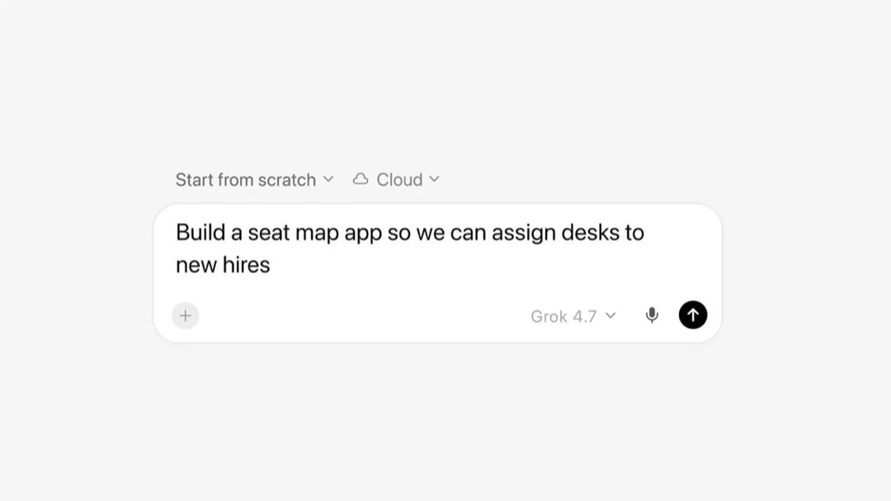
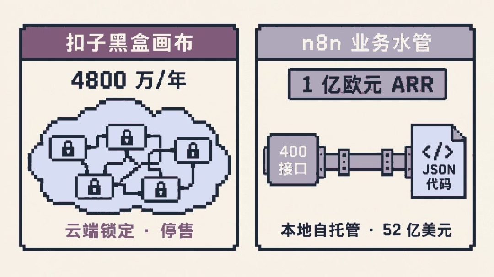
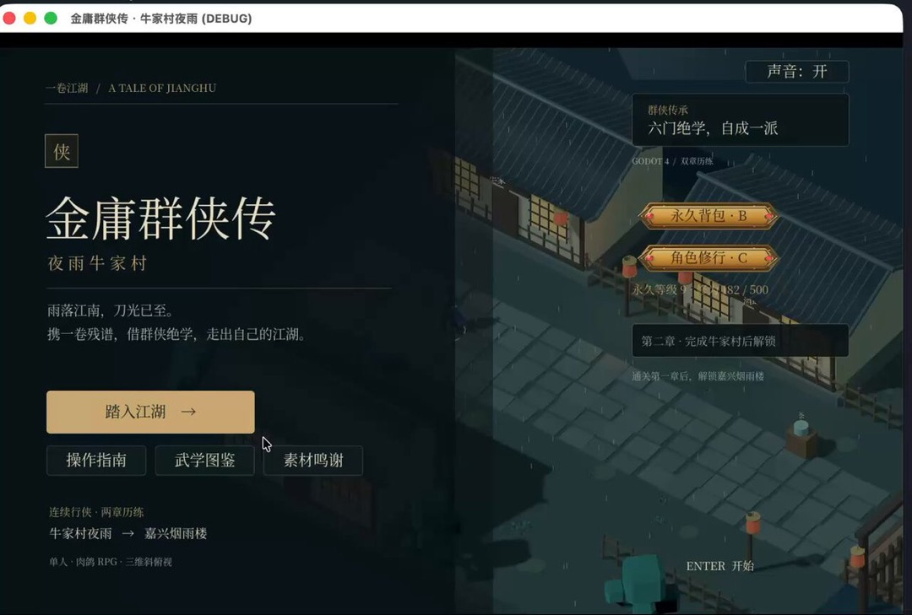

本期速览
01 Gemini Omni视频生成延至15秒
02 Cursor 一句话部署Web应用
03 扣子企业版停售暴露画布路线困局
05 Sprite Forge一键生成游戏动作
01｜Gemini Omni视频生成延至15秒
来源（X） · @hungryturbo · 2026-11-06 08:00
1、单次生成视频时长的上限从 10 秒提升至 15 秒，支持在 3 至 15 秒内按秒自定义时长。
2、价格下调 30%，720p 生成价格降至 $0.07/秒，支持先以 360p/720p 生成草稿并局部修改，最终放大至 1080p/4K 以节省成本。
3、支持融合图像，3 秒动态片段和音频提示，在首尾帧插值与跨镜头运动中保持角色、服装、文字和场景的高一致性。
4、支持对 15 秒成片直接逐轮微调（换背景/商品、改光影、转画幅、迁移运动轨迹），无需重头生成。
5、支持多角色精准配音与自然口型同步，可实现 FPV 穿行、极速拉远等一镜到底的零跳切复杂运镜。
6、自带 SynthID 防伪水印，已被 Adobe、Figma 等集成，现已上线 Gemini API、Google Cloud、AI Studio、Flow、Google Vids、Google Ads 及 Gemini 应用（AI Ultra 订阅正逐步开放）。
引用内容
Google @Google
中文译文
隆重介绍 Gemini Omni 1.2 Flash，这是来自 @GoogleDeepMind 的更新版视频生成模型 🎬
获得更强的一致性、更丰富的创作控制力，以及更快、更具成本效益的大规模视频生成：
⚡ 快速且成本降低30%：以360p或720p（$0.07/s）生成草稿，然后放大到1080p或4K
⏱️ 更长的片段：生成并编辑最长可达15秒的视频，或从3秒到15秒之间任意选择精确长度
💬 对话式编辑：逐轮更换背景、主体或灯光，无需从头重新开始
🗣️ 更自然的语音：创建流畅的多说话者对话，口型同步更清晰
🎬 更可控的镜头：引导连续的镜头运动，减少跳切
在实际效果中看到这些更新 ↓
原文
Meet Gemini Omni 1.2 Flash, our updated video generation model from @GoogleDeepMind 🎬
Get stronger consistency, more creative control, and faster, more cost-effective video creation at scale:
⚡ Fast & 30% lower cost: Draft at 360p or 720p ($0.07/s) and upscale to 1080p or 4K
⏱️ Longer clips: Generate and edit videos up to 15s, or pick any exact length from 3s to 15s
💬 Edit in conversation: Swap backgrounds, subjects, or lighting turn by turn without starting over from scratch
🗣️ More natural speech: Create fluid, multi-speaker dialogue with clearer lip-sync
🎬 More controllable shots: Direct continuous camera moves with fewer jump cuts
See these updates in action ↓
02｜Cursor 一句话部署Web应用
来源（X） · @mspd4100 · 2026-11-06 07:16
Cursor 新功能：
用户只需用自然语言描述想要的工具，Cursor 就能自动构建 Web 应用、设置数据库、完成认证与安全检查，并部署成可通过链接分享的在线应用
引用内容
X Freeze @XFreeze
中文译文
Cursor 干掉了"在我机器上能跑"
你现在已经可以在 Cursor 中构建实时应用，并通过链接分享
智能体让编写代码变得更容易，但大多数应用从未离开过 localhost。现在情况改变了
描述你想要的工具。Cursor 会为你构建它，需要的话设置数据库，运行确定性和智能体安全检查，然后部署它。你选择 URL，准备好后发布，获得任何人可以打开的实时链接
在你选择发布之前，没有任何东西会公开上线
Cursor 各团队已经在用它构建实时仪表盘、客户演示、内部运营工具、入职培训项目和开发者门户
从一个想法到一个别人真正能使用的可用应用之间的鸿沟，刚刚被消除了
现已在所有付费计划中可用。更新到最新版本的 Cursor 来构建你的第一个应用
原文
Cursor just killed "it works on my machine"
You can now build live apps in Cursor and share them with a link
Agents made it easier to write code, but most apps never made it off localhost. That changes now
Describe the tool you want. Cursor builds it, sets up a database if you need one, runs deterministic and agentic security checks, and deploys it. You pick the URL, publish when you're ready, and get a live link anyone can open
Nothing goes live before you choose to publish
Teams across Cursor are already using it for live dashboards, customer presentations, internal ops tools, onboarding programs, and developer portals
The gap between an idea and a working app someone else can actually use just collapsed
Available now on all paid plans. Update to the latest version of Cursor to build your first app

03｜扣子企业版停售暴露画布路线困局
来源（X） · @grapeot · 2026-11-06 01:05
一个令人困惑的地方是，德国另一个看起来在网页上拉线连框的 n8n，5 月份估值翻了一倍达到了 52 亿美元，年经常性收入超过 1 亿欧元（约 7.8 亿元人民币）。这是扣子公有云软件收入的 16 倍。
为什么长着一张连线画布的脸，结局却天差地别？因为它们底层属于两个完全不同的品类。
n8n 是个帮企业跨系统搬运数据的确定性工程管道。你在网页上选中所有方块按下复制键，粘贴出来就是一份纯文本代码，能直接存进公司代码库、免费装在内网服务器上跑，复杂逻辑随时插入 JavaScript 或 Python 脚本。它靠 400 多个企业连接器、约 185 名员工撑起了 1 亿欧元营收。
相比之下，扣子卖的是让人用鼠标教 AI 思考步骤的提示词流程图。这种卡在人类旧习惯和 AI 新能力之间的过渡品类，一旦进入真实生产环境就会撞上三面墙：
第一是复杂度爆炸。第 1 天花 15 分钟拖 4 个方框就能跑通的演示流程，到了第 2 周加上接口超时等 5 秒重试 3 次、客户 3 个月内退过 2 次款转人工审核这两条真实业务规则，就会膨胀成 50 到 60 个方框的蜘蛛网。哪怕跑到第 58 个框因网络抖动报错，前面烧掉的积分也照扣不误。
第二是模型换代断联。画布里每个方框的提示词都顺着特定模型的脾气死磕出来，但今年 3 月到 10 月，扣子因底层火山方舟停服旧模型，分 5 批下架了 30 多款主力模型。每次模型下线，线上工作流就直接停摆。
第三是资产锁死。直到宣布企业版停售那一刻，官方都没有现成的批量导出工具，而计费文档写明套餐到期或退订 15 天后将自动销毁企业记忆库且不可恢复。
更关键的是，现代 AI 已经开始能自己规划步骤和写代码来操作电脑。Claude Code、Codex、甚至字节自己的 TRAE 都能在虚拟电脑沙箱里用 2 分钟写一段 30 行的 Python 脚本，自动处理 50 份不同格式的供应商报价单，自己改错重跑。人再去网页上拖拽 60 个死板的连线框就多余了。字节在 8 月下旬把扣子团队和 TRAE 并入豆包体系，推出豆包工作，让 TRAE 在前台写代码，把扣子攒了 3 年的沙箱和 700 多个插件当作幕后工具库，就是看明白了这一点。
用鼠标给 AI 画流程图的过渡时代已经结束。扔掉别人的网页画布之后，我们手里真正该留下两样搬不走的资产：
1. 留在自己电脑上的纯文本 Markdown 说明书：把任务目标、业务规矩和验收标准写成普通文本放进代码库，今天喂给豆包，明天换 Claude 或 DeepSeek 一秒切换。
2. 独立的小脚本与标准沙箱接口：把查数据库、发飞书通知等固定动作封装成输入输出清晰的命令行小工具或自托管管道，给 AI 配好安全的手脚，剩下的流程放手让它自己写代码跑完。
完整分析见原文：
https://yage.ai/share/coze-enterprise-shutdown-20261105.html?utm_source=twitter&utm_medium=thread&utm_campaign=coze-enterprise-shutdown-20261105

04｜THX-02开源决策模型支持手机运行
来源（X） · @reversedoofz · 2026-11-06 00:14
中文译文
等等……
一个开源的 THINKING 决策模型，而且在 Decision Index 上击败了 Jev……
拥有免费 API？！
可以在手机上本地运行？！
认识一下 THX-02。
权重（Hugging Face）：https://huggingface.co/HAL-X-AI/THX-02
ModelScope：https://modelscope.ai/organization/HAL-X/THX-02
API：https://api.hal-x.ai/docs/thx-02
pip install thx02
原文
WAIT...
An open-source THINKING decision model with that beats Jev on Decision Index...
Has a FREE API?!
Can be launched locally on a PHONE?!
Meet THX-02.
Weights (Hugging Face): https://huggingface.co/HAL-X-AI/THX-02
ModelScope: https://modelscope.ai/organization/HAL-X/THX-02
API: https://api.hal-x.ai/docs/thx-02
pip install thx02
05｜Sprite Forge一键生成游戏动作
来源（X） · @wherecall1 · 2026-11-04 22:37
今天给大家扒一个 GitHub 上已经狂揽 5k+ Star 的开源神器：Agent Sprite Forge (v0.4.0)！
它是一套直接装在 Claude Code、Codex 或 Grok 里的 AI 技能包（Agent Skill）。
简单来说，它的核心玩法就是：你只需要点头确认一张静态角色立绘，它就能自动帮你肝出全套游戏动作（待机、走路、跑步、攻击、跳跃、受击）+ 2D 游戏地图，并且直接打包成 Godot、Aseprite 和网页游戏能用的现成文件！
试了下效果不错！#AI #GAME
